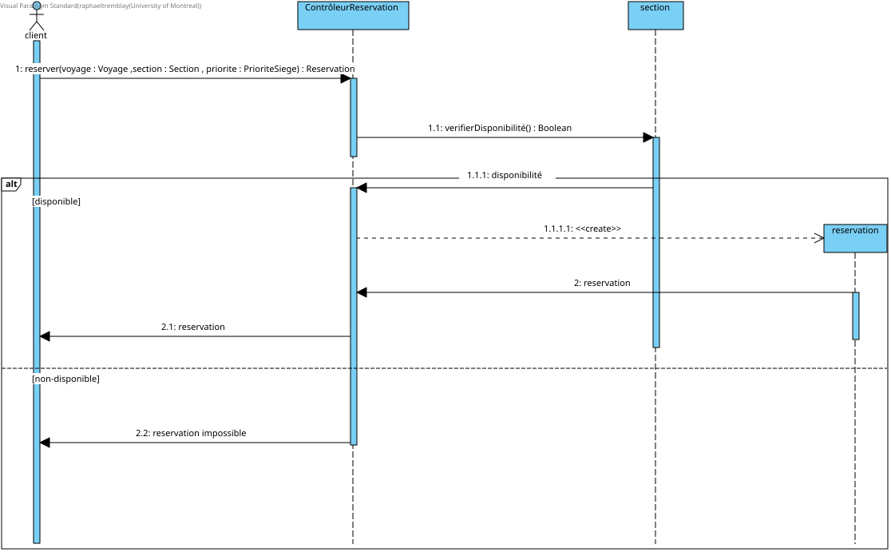

Le but de ce devoir est de mettre en pratique nos techniques de conceptions orientées-objet en concevant
un logiciel de gestion de réservation de voyages par avion, paquebot et train. Ce premier devoir consiste à
réaliser le modèle de conception du domaine (diagramme de classe conceptuel et diagrammes de séquence système)
ainsi que le design du logiciel (diagramme de classe, diagrammes de séquence, diagramme de paquets et contraintes OCL).
2. Distribution des tâches
Cette section présente toutes les tâches accomplies et la
contribution de chaque membre de l'équipe pour chacune d'elles.
Hypothèse 1 :
Un voyage sans aucune place disponible est considéré comme inexistant pour l'utilisateur, autrement dit
il ne s'affichera pas et ne sera pas disponible.
Hypothèse 2 :
Si une section est complète, peu importe le mode de transport, l'option de la sélectionner
ne sera pas disponible à l'utilisateur.
Hypothèse 3 :Nous supposons qu’un train physique appartient à une seule ligne de train
et qu’il peut être assigné à plusieurs trajets.
Hypothèse 4 :
Les places (sièges/cabines) sont assignées par le système, c'est-à-dire que
le système assigne une place automatiquement en tenant compte des places
disponibles dans la section choisie par le passager ainsi que sa préférence (aile/fenêtre), s'il y a lieu.
Les classes Vol, Itineraire et Trajet sont généralisées sous Voyage afin
de regrouper leurs caractéristiques communes. De même, Aeroport, Port et
Gare sont regroupés sous Lieu.
Les classes Escale et Arret permettent de conserver l'ordre des ports et
des gares visités. Enfin, UniteReservable généralise les sièges et les
cabines afin de représenter uniformément l'élément associé à une réservation.
Comme indiqué dans l' hypothèse 3, le modèle suppose qu’un train appartient à une seule ligne de
train et que le prix d’une section correspond au prix applicable dans le
contexte du véhicule et de la compagnie concernés.
Figure 2.1 — DSS pour la vérification des voyages
Figure 2.2 — DSS pour la réservation des voyages
Figure 2.3 — DSS pour le paiement des voyages
5.3 Justification des choix
L'hypothèse 1 existe de sorte à éviter que, lors de la réservation des voyages
par l'utilisateur, il soit nécessaire de vérifier s'il y a des places disponibles. Si l'utilisateur
est rendu à l'étape de réserver, on est assuré de savoir qu'il y a au moins une place disponible et donc
que c'est valide et il pourra directement sélectionner une section. Cela amène à l'hypothèse 2.
Celle-ci existe pour éviter que l'utilisateur puisse sélectionner une section sans place disponible et de
devoir envoyer un message d'erreur et/ou de lui assigner une place dans une section que l'utilisateur ne désire
pas. On s'assure ainsi que l'utilisateur sache d'emblée quelle section il aura. De plus, dans la
figure 2.2, on a l'étape de sélectionner une section méme si la recherche a été
faite en spécifiant une section. Ce choix a été fait, car on a déterminé que lorsque l'utilisateur sélectionnera un voyage,
le système affichera tous les détails du voyage, incluant l'information sur les autres sections. Ainsi, l'utilisateur pourra
voir l'entièreté de ses options pour ce voyage sans devoir refaire une recherche, ce qui est pratique s'il change d'avis
quant à la section!
Figure 4.1 — Vérifier les vols/trajets/itinéraires
Justification :
D'abord on sépare les cas voyages aériens/ferroviaires et les voyages navals, car les voyages navals
ne requiert pas de destination. Dans le premier cas, la base de données va itérer parmi chaque voyage et, à chaque fois, on
vérifie si la recherche avait été faite pour un voyage aérien. Si c'est le cas et que le voyage à l'itération courante est un voyage aérien, alors on va chercher les informations du vol et les autres
voyages seront ignorés. De cette manière, on considère seulement les voyages concernés par la recherche. C'est le même principe si la recherche avait été faite pour un voyage ferroviaire. Ensuite,
on vérifie si ce voyage satisfait les critères de la recherche et, si c'est le cas, on l'ajoute dans la liste de voyages
à retourner. Dans le deuxième cas, la recherche est toujours faite pour un voyage naval, alors, dans ce cas, on va chercher l'information du voyage courant seulement
si c'est un voyage naval, c'est-à-dire qu'on va chercher l'information de l'itinéraire. Comme dans le premier cas, on vérifie si ce voyage satisfait les critères et, si oui, on l'ajoute à la liste. Finalement,
une fois la liste complétée, on la retourne et on l'affiche au client.

Figure 4.2 — Réserver un siège
Justification :
Le diagramme de séquence illustre le processus de réservation d’un siège à partir
de l’opération reserver() du ControleurReservation. Le contrôleur vérifie d’abord
la disponibilité de la section avant de créer une réservation. Le fragment alt
permet de représenter les deux résultats possibles, soit une réservation réussie
lorsqu’une place est disponible, ou une réservation impossible dans le cas contraire.
Le diagramme de paquets organise le système en regroupant les éléments selon
leurs responsabilités principales. Le package Application regroupe la logique
de coordination, tandis que le package Domaine contient les concepts métier.
Les domaines aérien, naval, ferroviaire et réservation dépendent du package
Commun afin de réutiliser les abstractions partagées et de réduire la duplication.
9. Tâche 6 — Contraintes OCL
1. Un aéroport est identifié par trois lettres uniques à chaque aéroport.
context Aeroport
inv: self.idAeroport.size() = 3 and
Aeroport.allInstances()->isUnique(idAeroport)
2. Une compagnie aérienne est identifiée par un code de deux lettres
unique à chaque compagnie.
context CompagnieAérienne
inv: self.code.size() = 2 and
CompagnieAérienne.allInstances()->isUnique(code)
3. Chaque vol est assigné à un avion appartenant à la compagnie
aérienne qui l'exploite.
4. Un même avion peut être assigné à plusieurs vols, mais deux vols
assignés au même avion ne peuvent pas se chevaucher.
context Vol
inv: Vol.allInstances()
->select(v | v.avion = self.avion and v <> self)
->forAll(v | not (v.heureDepart < self.heureArrivee
and v.heureArrivee > self.heureDepart))
5. Un vol est identifié par un ID formé du code à deux lettres de la
compagnie aérienne suivi d'exactement quatre chiffres.
L'ID complet est unique à chaque vol.
context Vol
inv: self.idVol = self.CompagnieAérienne.code.concat(self.idVol.substring(3, 6))
and self.idVol.size() = 6 and Vol.allInstances()->isUnique(idVol)
6. Une même section ne peut apparaître qu'une seule fois, et tout avion
doit contenir une section Économique (E).
context Avion
inv: self.sectionsAvion->isUnique(type) and
self.sectionsAvion->exists(s | s.type = 'E')
7. Un itinéraire ne peut pas durer plus de 14 jours.
12. Un passager peut avoir plusieurs réservations confirmées pour des
voyages différents, mais ne peut avoir plus d'une réservation
confirmée pour un même voyage.
![[Vérification des voyages]](./domaine/diagrammes/Verification voyages.svg)
![[Réservation des voyages]](./domaine/diagrammes/Reserver place.svg)
![[Paiement des voyages]](./domaine/diagrammes/Payer reservation.svg)
![[Description du diagramme de séquence]](images/[diagramme-sequence-3.svg])